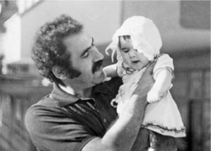
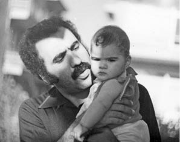
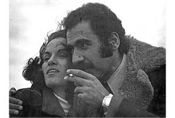

“Keşke Bir Öpüp Koklasaydım,Bir Kokusunu Alsaydım.”
Alaz Erdost3
Babam ve amcam Sol ve Onur Yayınları’nın sahibi. Lenin, Marx ve Engels klasiklerini Türkçe’ye kazandırıyorlar, yayınevlerinde basıyorlar. 12 Eylül Darbesi’nden hemen sonra Kasım’ın başlarında amcam Muzaffer Erdost gözaltına alınıyor, 2-3 gün sonra da babam İlhan Erdost, annemle birlikte Ankara Emniyeti’ne giderek kendisi teslim oluyor. Evde arama yapıldığında, yasak olmadığı halde, Engels’in kitabı Doğanın Diyalektiği’nden iki tane bulunduğu için gözaltı kararı veriliyor. Mamak Cezaevi’yle Emniyet arasında gidip geliyorlar. Çünkü bir türlü dosyalarına bakılamıyor. Neden dosyaları işlem görmüyor, neden bekletiliyor işlemler biz de bilmiyoruz ama zaten sürecin programlı olduğunu tutuklama işlemini cuma günü saat 17.00’den sonra yaparak biraz belli ediyorlar. Daha rahat davranabilecekleri ve belirledikleri ekip ile yaratacakları işkenceyi işaret ediyor bu. Çarşamba, perşembe ve cuma günü mesai bitimine kadar Ankara Emniyeti’nden Mamak Askeri Cezaevi’ne götürülüp getiriliyorlar mahkemeye çıkabilmek için. Hatta babam, kendisini götüren polislerle Mamak Askeri Cezaevi’ne geçerken annemin işyerine uğruyor. Annem de SSK Dışkapı Hastanesi’nde Sosyal Hizmet Uzmanı olarak çalışıyor. Babam gidiyor, annemi telefonla dış kapıya çağırıyor, kendilerine ilişkin bilgi veriyor, bizden konuşuyorlar. Bu, emniyet görevlilerinin ne kadar rahat olduklarını göstermesi açısından önemli. Cuma günü tutuklanmasından hemen sonra, araç içerisinde ve dışında dövülerek koğuşlarına götürülürken, babam öldürülüyor. Tutuklanmalarını hiç hesaba katmadıkları için babamlar çanta hazırlamadan gidiyorlar. Üşüyeceğini düşünen annem hazırladığı çantayı cezaevine götürüyor. Babamın belinde bir rahatsızlık varmış, fıtık ameliyatı olmuş, belinden rahatsızlanmasın diye ısrar ediyor çantayı almaları için, ancak almıyorlar. Çünkü babam öldürülmüş ve öldürülüşünden 3 gün sonra aile ve kamuoyu ile paylaşıyorlar.
Olay Günü...
O güne dair birtakım küçük detaylar var. Amcamın da tanık olması, gerçeği öğrenmemizde, tanıklık etmesinde önemli rol oynuyor. Tutuklama kararı alınan A Blok’tan C Blok’a, arabayla 2 dakika sürecek bir mesafe için görevli er, telefonda inatla büyük araç istediğini söylüyor. Telefonun diğer ucundaki, başka, küçük bir nakil aracı olduğunu söylüyor. Hayır diyor büyük araç gönder, anlarsın ya! Öbür er de Reo marka araç var diyor. Er, “Tamam o olur” diyor. Babam ve amcam, üç er ve bir astsubay tarafından bindiriliyorlar bu araca ve 25 dakika boyunca dövülüyorlar. Bu arada, yolda bir er daha biniyor araca. İşte bu er aslında o gün görevli değil, özellikle getirilmiş oraya veya kendisi gelmiş. Sonradan da Ülkü Ocakları’yla ilgili bir bağlantısı olduğu ortaya çıkıyor. İkisi babamı, ikisi amcamı dövüyorlar, arada duruyorlar ve ellerinizi yana birleştirin diyorlar ama babamın da amcamın da elleri şişiyor, yana birleşmiyor. Tutamıyorlar yanda, birleşmediği için tekrar dövme emri veriliyor. O sırada babam kafasına aldığı bir darbe sonucunda düşüyor. “Kızımı uyandırmaya kıyamadan geldim, bizi dövdürmeyin” diyor astsubaya.

İlhan Erdost kızı Türküler Erdost ile birlikte
Astsubay “Benim kızım da ateşler içerisinde yatıyor, ben de onu bırakıp geldim” deyip tekrar dövdürmeyi sürdürüyor. “İçeridekiler sizin zehirlediklerinizle dolu, sizin ananızı ağlatacağım” diyor. Erlere de “Onların anasını ağlatmazsanız, ben sizin ananızı ağlatacağım, hayalarını patlatacaksınız!” diye emirler veriyor. Babam yere düşünce, amcam onu kaldırmaya çalışıyor, astsubay ona da izin vermiyor, “Kendi kendine ayağa kalkacak” diyor. Sonra babamı ve amcamı koğuşa götürüyorlar ama babam düşüyor, “Nefes alamıyorum ağabey” diyor. Kusmaya başlıyor. Zaten amcam doğruluyor ve “İlhan, İlhan” diye sesleniyor. Hem kitabın hem de kitabevinin isminin çıkma yeri de burasıdır. Babamdan ses gelmiyor, tekrar İlhan İlhan diyor, o sırada koğuştaki diğer kişiler “Ölmüş bu” diyerek, suni teneffüs yapmaya çalışıyorlar. Sonra erler, gelip battaniyeye sarıp babamı götürüyorlar. 7 Kasım’da oluyor olay, aileye haber verilmesi ise 10 Kasım. O arada tahmin ediyorum ki, başka bir rapor çıkarmak için çabalıyorlar. Çünkü amcamın da ağzını arayarak kalp krizinden öldüğü yönünde davranmaya çalışıyorlar ama amcam olayı yaşadığı için tabii ki bunu gerçekleştiremiyorlar ve görevli askeri tabip rapora imza atmak istemiyor. Daha sonra bizim avukatımız olan Halit Çelenk’i çağırıyorlar ve “Müvekkiliniz İlhan Erdost öldü, gelip eşyalarını alın” diyorlar. Halit Amca’yla babamın amcası gidiyorlar, tek ayakkabısını, kanlı paltosunu ve çantasını alıyorlar. Bu sırada amcam da “Lütfen cenazesine beni de çıkartın, cenazesine gitmek istiyorum!” diyor. Amcamı da tahliye ediyorlar. Tutuklanmalarını gerektiren dava ile ilgili de daha sonraki süreçte herhangi bir yasal durum söz konusu olmuyor.
Bu sırada ben 5.5 aylığım, ablamsa 2.5 yaşında. Cezaevinden babamla ilgili haberi ve eşyalarını alan Halit ağabey, amcamların evine geliyor ve annemi de çağırıyorlar. Amcamlarla evlerimiz çok yakın ve uzun seneler de öyle yaşadık zaten. Oraya gittiğinde, annem, bir tuhaflık olduğunu anlıyor, içeride bir kalabalık ve herkesin yüzü asık. Kalabalık da giderek artıyor. Bir şeyler olduğunu seziyor, “Doğru söyleyin bana, ne oldu, hasta mı İlhan” diyor. “Mide kanaması geçirdi” diyebiliyorlar en sonunda. Annem de hastanede çalıştığı için, olası acil bir durumda kan bulunabilsin diye arkadaşlarını arıyor. Fakat bir değişiklik olduğunu da seziyor. Diyor ki “En iyisi ben Uğur’u arayayım”. Uğur Mumcu’yu arıyor. Bağlatıyor ve ismini söylemeden bir okuyucu gibi, “Ben bir okurunuzum, İlhan Erdost’un başına gelenleri öğrenmek için aradım” diyor. Uğur Mumcu da “Maalesef kaybettik!” diyor ve annem bu şekilde, yakın aile dostumuz olan Uğur Mumcu’dan öğreniyor.
Tahmin ediyorum daha sonra ev aramalarına gelmediler. Zaten öldürdükleri için, amaçlarına ulaşmış oldular bu durumda. Çünkü planlı bir öldürümdü. O süreci bu kadar ayrıntılı anlatmamın sebebi de bu. Babam 10 Kasım’da ilan ettikleri gibi “Başına vurulan bir dipçik darbesi.” ile ölmedi ya da yanlışlıkla öldürülmedi. Babamın ölümü çok planlı, programlı, yukarıdan verilen emirle işlenmiş bir cinayettir, “Faili belli-meçhul cinayet” diyoruz biz babamın durumu için. Tıpkı binlerce faili belli-meçhul cinayet gibi.
Dava Süreci
Sonrası çok komik bir yargılama süreci. Erlere, suça karışan maşalar diyoruz biz onlara. 10 yıl 8’er ay hapis cezaları veriliyor. Esas dövme emri veren astsubay Şükrü Bağ, önce ceza alıyor, sonra vazgeçiliyor o cezadan. Bunun sebebi olarak da oraya yeni gelmiş olması ve cezaevinin yönetmeliğini okuyamamış olabileceği, bu yüzden REO marka araca bindiğinde askerlerle tutukluların bulunduğu yerin arasındaki yeri açmayı unuttuğu ve önde şoför mahallinde otururken arkada olanları duyamayacağı gerekçe gösteriliyor. Görevi ihmalden 6 ay ceza alıyor.
Arada açık durması gereken demir sürgü gibi bir şey varmış ama bizzat kendisi dönüp izliyor zaten. Açık olan şu ki, çok uzun bir zaman dövülüyorlar. O araç dolaşıyor, duruyor. Şükrü Bağ arada iniyor, bakıyor, yetmemiş diyor, elleri yeteri kadar şişmemiş, yeniden dövün, bu olmamış diyor. Çok uzun sürüyor zaten, fakat 2 dakikalık bir yoldan bahsediyoruz. Görevi ihmalden 6 ay ceza alıyor ama tabii ki yatmıyor içeride ve de hayatını asker olarak, düzenli bir biçimde emekli olarak, mutlu sonlandırıyor. Mamak Askeri Cezaevi’nin Müdürü Albay Raci Tetik mahkemede yargılama sırasında, sadece tokat atılması gibi bir emir verdiğini açıklıyor. Erler dava bitiminde ifade vermek istiyorlar ve el yazılarıyla, ayrıntılı olarak anlatıyorlar olayı. Emir aldıklarını ve bunu yapmak zorunda kaldıklarını açıklıyorlar ama mahkeme onu da delil olarak kabul etmiyor. Babamın davası 4 erin ceza almasıyla sonuçlandırılıyor. Tutuklanmış olan amcam, hiçbir dava sürecinden geçmeden salıveriliyor. Yasak yayındı güya. 7 Kasım’da babam öldürülüyor. Halbuki, bize ait olan ve daha önceden kapatılan İlkyaz Basımevi’nin yasak yayın olmadığı için açılabilir kararı Ekim ayında verilmiş zaten. Bu arada babamların tutuklanmasının tutanağını tutan da, basımevinin açılması tutanağını imzalayan da aynı görevli. Yani yasak olmayan bir yayın yüzünden böyle bir olay yaşanıyor. Her şey tabii ki burada bitmiyor. Birkaç yıl sonra kitap depomuzda yangın çıkıyor, yangını söndürmek için bütün kitapları ıslatıp kullanılmaz hale getiriyorlar. Amcamı ve annemi de “Deponuzda yasak kitap vardı siz mi yaktınız?” diye sorguluyorlar. Hatta hâlâ gözümün önünde, bizim bir minibüsümüz vardı, ben küçüktüm ama onu yaktıklarını hatırlıyorum. Devam etti böyle. Annem iki kez Hakkari’ye sürülüyor. Annemin başhekimi izin vermiyor gitmesine. Onu gönderemezsiniz diye tayini yapan yetkili kişi kimse gidip kapısına, “Zaten kadının kocasını öldürdünüz, perişan ettiniz, buna izin vermeyeceğim” diyor. Şöyle anlatılmış anneme de, bir kış günü, paltosunu bile giymeden koşarak çıkıp gitmiş hastaneden genel müdürlüğe, izin vermeyeceğim buna diye. Yapmamışlar ve böylece tayini durdurulmuş. Ancak anneme de yıllar sonra söylemiş tedirgin olmasın diye.
Askerler...
Mamak Askeri Cezaevi’nin Müdürü Raci Tetik’in eşinin yaptığı bir açıklama var. Kocasını bir peygambere benzetiyor, şanlı bir Türk askeri olduğunu ve görevini layıkıyla yerine getirdiğini, o dönemin başka bir dönem olduğunu, yaptıklarının işkence ve dayak değil, kültür fizik hareketi olduğunu, sadece verilen emirleri uyguladığını ve o olmasaydı şu anda çok daha kötü bir durumda olacağımızı, bu yüzden 12 Eylül’ü yaşayanlardan dinlememiz gerektiğini söylüyor. Bir dönem Raci Tetik aslında yurtdışında yaşıyormuş gibi lanse edilmişti, oysa ki uzunca bir zamandır İzmir’de bir huzurevinde kalıyordu. Şimdi ise İstanbul’da devlete ait bir huzurevinde. TBMM Darbeleri Araştırma Komisyonu da gitti görüşmeye zaten. Ayrıca eşi şunu da ekliyor; çok canımı yakan bir açıklamadır: “Ben kocamı 4 yıldır göremiyorum, 4 yıldır ayrıyım kocamdan, kocam çok hasta ve yaşlı, ben de öyleyim, artık bizim peşimizi bırakın, ben çok üzülüyorum, kocamı çok özledim.” Ben bunu okurken annem yanımdaydı ve orada olduğu için çok utandım. 4 yıldır kocasını göremiyormuş ve peygamber gibi bir adammış. O yüzden Raci Tetik ve karısının açıklamalarını okuyunca önce gülüyorum sonra da çok sinirleniyorum, sonra sakinleşiyorum, sonra da tekrar gülüyorum. Mamak Askeri Cezaevi’ni işkencehaneye çeviren bir adam O. Böyle karmaşık duygular içerisindeyim ama kin gütmüyorum. Kin gütmemeyi öğrettiler bize. Hatta annem der ki, şu anda Raci Tetik’i veya Şükrü Bağ’ı getirseler, önüme koysalar ve silah verseler, haydi vur deseler vuramam. Hatta tokat at deseler, tokat atsam, ah dese ben de ah derim. Aynı şekilde, ben de istemem, ben de onlara şiddet uygulayamam ama isterim ki hukuki yollarla cezalarını çeksinler. O şekilde cezalandırılsınlar. Bu da Türkiye’de yaşarken bir hayal sanırım.
Hayat Devam Ediyor...
Bizim çok büyük ve çok güzel bir ailemiz var. Tamamen birbirine kenetlenmiş bir aile düşünün. Hem baba tarafı hem anne tarafı öyle. Zaten bizi halam, amcam, teyzem ve dayım büyüttü. Teyzelerim, anneannem, sayamadım yani, herkes büyüttü çünkü. Benim teyzem, “Alaz 18 yaşına girene kadar evlenmeyeceğim” diye kendi kendine söz veriyor ve ben 18 yaşımı bitirene kadar gerçekten bizimle yaşadı. Ben 5.5 yaşındayken bana senin annen kim dediklerinde ben ağlardım, onu da hatırlıyorum. En sonunda beni doğuranın annem olduğunu ama büyüten annemin teyzem olduğunu söyleyerek bir çözüm bulmuştum. Dayım da çok uzun bir süre bizimle yaşadı korumak için. Amcamın eli her zaman üstümüzdeydi. Biz ilkokula giderken, ablam TED Ankara Koleji’ne, ben Arı Lisesi’ne başladığımızda, bizi okuldan alan amcamdı. Sonra kitabevine giderdik, annemin iş saatinin bitmesini beklerdik. Amcam kitabevinde bize yemek yedirirdi. Annem çok güçlü bir kadındır ama aile desteği olmasaydı tahmin ediyorum annem bu kadar güzel altından kalkamazdı.

İlhan Erdost kızı Türküler Erdost ile birlikte
Acı şeyler de olmadı değil. Örneğin, benim kuzenlerim hiçbir zaman, babalarına bizim yanımızda baba diyemediler, baba diye seslenemediler biz üzülürüz diye. Özellikle ablam 2.5 yaşına kadar babamı hatırladığı için ve çok üzüldüğü için onun yanında yasaktı. Dayım dedeme Hüseyin ağabey derdi ve dedem öldüğünde hâlâ Hüseyin ağabey diyordu, baba denmezdi bizim ailede. Ablam da ben de büyük ve bu kadar özverili bir aileye sahip olmanın avantajlarını çok gördük. Benim dayım ve amcam, iki tane babam var, kaç tane annem olduğunu görüyorsunuz işte sayamıyorum.
Ben bu cinayeti bilmeden büyüdüm. Babama zamanında bir de suikast düzenlemişler. Biz çok yokuş bir sokakta oturuyoruz, annem hâlâ orada oturuyor, EGO otobüsü babamın arabasının üstüne çıkmış. Kendilerini kaldırıma atarak kurtarmışlar. Ben doğmamışım henüz. Onun fotoğrafları vardı evde.
Bana ve ablama babamın trafik kazasında öldüğünü söylemişlerdi. O da şöyle başlamıştı, tabii ablam daha önce öğreniyor, sürekli Küçükbahçe’ye gidiyoruz. Küçükbahçe babamın mezarının olduğu yer. Açıklanamıyor, Küçükbahçe neresi, “Babam nerede anne?”, “Uzağa gitti kızım.” Çok uzun bir süre Almanya’ya daktilo almaya gitti demişler. Sonra ablam küsmeye başlayınca psikologlara danışarak öldüğünü ve bahçesi olduğunu söylemişler. Biz sürekli babamın bahçesine gider gelirdik ve en sonunda bize trafik kazasında öldüğünü söylediler. Ben de onu içselleştirmiştim. İlkokuldayım, bu anı da bayağı iyi hatırlarım, trafik kazaları konulu dersimiz vardı. Öğretmen, trafik kazası gören oldu mu deyince, ben de parmak kaldırdım ve benim babam trafik kazasında öldü dedim. Öğretmenim de gelip başımı okşayıp tamam Alazcım, tamam canım deyip ağlamıştı. Ben de herhalde babam öldü diye ağladığını düşünmüştüm. Bu hep gözümün önünde. Hatta gidip anneme anlatmıştım, annem de ağlamıştı sonra. Bir süre sonra okuma yazmayı söktüm. Tempo dergisiydi galiba, kapağında babamın fotoğrafı vardı. Annem onu orta sehpada unuttu mu, yoksa özellikle mi bıraktı bilmiyorum. Annemle Güven teyzem, koltukta battaniyenin altına girmişlerdi ve ağlıyorlardı. Bense heceleyerek babamın öldürülüşünü okuyordum. Sonra ablamla beraber, anneme çok kızdığımızı hatırlıyorum. Detayları tam hatırlamıyor olabilirim ama olayı böyle öğrendiğimi biliyorum. Annem de böyle öğrendiğimi söylüyor. Gözümün önünde bir fotoğraf var, o da bu şekilde. Çok kızmıştım anneme ve teyzeme ama onlar ağlamaktan bana bir şey söyleyememişlerdi. Ben babamın dövülerek öldürüldüğünü öyle öğrendim.
Küçüklük bizim evde hem çok güzeldi hem de çok zordu. Bir taraftan çok şımartılıyorduk, bir taraftan da, mesela Hasretinle Yandı Gönlüm vardı, Edip Akbayram söylüyordu, annemi hep onu dinleyip ağlarken bulurdum. O yüzden şimdi ağlayan insanlar görmeye dayanamam, çok da ağlamam, sorgularım neden ağlıyorsun diye. Çünkü annem, her sabah uyandığında salonda Edip Akbayram dinlerdi. Sonra bir ara Edip Akbayram bizi aramıştı, nasılsınız diye, çok memnun olmuştuk!
Ablam olmasa ne yapardım bilmiyorum. Çok iyidir, 24 saat görsem 25. saatte özlerim, çok bağlıyızdır birbirimize, çok koruyup kollarız birbirimizi. Bazen o abla olur, bazen ben abla olurum. Çok severim ablamı, çok iyi insandır.
Babamın nasıl öldürüldüğünü saklayayım veya bundan utanayım gibi bir durum yaşamadım. İlkokul 5. sınıftaydım, çok da fazla insana anlatmıyordum galiba ama bir anda sınıftakilerin benden çok uzaklaştığını gördüm. Annem de evde sezinliyormuş. Çünkü eve gelip sürekli ağlıyormuşum, benimle konuşmuyorlar diye. Benim takma adım Perihan Abla’ydı o dönemde, Perihan Abla diye bir dizi vardı. Sınıf başkanıydım, her dediğimin olduğu, çok sevilen bir çocuktum. Ben de çok severdim arkadaşlarımı, kalabalık bir grup halinde oynardık. Sonra bir anda kimse benimle konuşmamaya başladı. Annem de benim durumumu anlayınca, okula gelip konuşmuş. Bir ortaya çıktı ki, sınıfımızdaki polis kızı “O teröristin kızı, onunla konuşmayın” demiş herkese. Annem çok sinirlenmişti ama kızla ilişkim bozulmasın diye söylemediler bunu bana. Zaten bir ilişkim kalmamıştı gerçi, o benimle konuşmuyordu çünkü. Sonra benim arkadaşlarımla aram düzeldi bir anda. Hiçbir şey yapmama gerek kalmadı. Biraz daha bilinçlendikten sonra İlhan Erdost’un kızı olmak zaten ağır bir sorumluluk, çok büyük bir onur kaynağı ama hareketlerine her zaman dikkat etmen gereken bir duruma dönüştü. Etrafıma da söylememe çok gerek kalmadı. Çünkü, genelde insanlar babamı tanıyorlardı. Şimdi o kadar tanınmıyor artık ama ben çocukken, ortaokuldayken, lisedeyken, hatta kitabevine gittiğim dönemlerde bir sürü tanımadığım insan gelirdi kitabevine bizi görmek, ablam ve benimle tanışmak için. Bize hediyelerle gelirlerdi. O dönemde artık yasaklı olmayıp yurtdışından Türkiye’ye gelebilenler gelip tanışırlardı bizimle. Güzel güzel insanlarla tanıştım.
Büyüdükçe İlhan Erdost’un kızı olmak zorlaşmadı. Belki de hiç yaşım olmayacak bir zamanda, bizim kitapları okumuş ve artık öğrenmeye başlamıştım. Zaten onun içine doğunca, insan çok uzak duramıyor meselelere. Toplumun genelinin yaşadıklarıyla, bizim yaşadıklarımız arasında gidip gelirken içine düştüğümüz ikilemleri düşündüğüm zamanlar olmuştu ama hiç son senelerdeki kadar düşünmemiştim diyebilirim. Ablam da ben de burslu okuduk. Kirada oturuyorduk. Çok da tatlı bir ev sahibimiz vardı. Anneme “Ne kadar paran var” deyip hiç olmayacak bir şekilde, oturduğumuz evi bize sattı. O dönemi ben hatırlıyorum, 15 yaşında falandım, ona da ne kadar teşekkür etsek azdır. Sanıyorum 3-4 yıl hiç kira bile ödememişiz. Çünkü babam öldüğünde, amcam çok uzun bir süre tedavi görmüş. Annem zaten devlet memuru ama raporlu, çalışamıyor. Çünkü yürüyememiş. Bir de babamın borçları çıkmış daha sonra, o dönemde. Biliyorsunuz, her şey kâğıt üstünde olduğu için, yatırılmış olan Bağ-Kurlar bile yatırılmamış göründüğünden annemin maaşı da kesintiye uğramış zaten, amcam hem çalışıp kendi ailesine hem bize destek oluyordu. Çok zordu koşullar. Biz özel okula gittik ama ben 3. ablam da 5. sınıftayken farklı okullarda olsalar bile iki kardeş burslu okuyamaz diye bir kural çıkarıldı. Annemin okula gelip, bu çocukları mağdur edemezsiniz diye tartıştığını hatırlıyorum. Birazcık da şanslıydık, bizim öğretmenlerimiz daha bilinçli ve sosyal demokrat insanlardı. O yüzden ben ilkokulda çok da hissetmedim bu ikilemleri, dışlanmadım ama liseye geçtiğimde mesela iki tip arkadaşım vardı. Özel okulda okuyor, hiçbir şeyden anlamıyor ve hayatını öyle yaşıyor diye bir genelleme yapıp kalıba koymak istemiyorum ama gerçekten hayatı boyunca kitap okumamış, yakın tarihi hakkında hiçbir fikre sahip olmayan, hiçbir şey öğrenmemiş arkadaşlarım da oldu. Zaman zaman sinirlenmek yerine konuşmayı tercih ettim ve her zaman da konuşmak işe yaradı.
Ben liseye daha duyarlı ve farkında olarak başladım ve arkadaşlarımı da bu şekilde seçtim. Elemek zorunda kalmış olabilirim ama isteyerek yaptım sanırım. Arkadaş konusunda hep şanslıydım. Hacettepe’de okuduğum için de şanslıydım. Çünkü Hacettepe de ideolojik anlamda iyi bir okuldur, zıpkın gibi çocuklar gelip gider oraya da. Hâlâ öyle midir bilmiyorum ama politik görüşleri vardır, kitap okurlar, anlarlar bazı şeyleri. Hacettepe’de de çok zorlanmadım. Sadece bir hoca takmıştı bana o şekilde. Maliye mezunuyum ben, bir dersimden 3 kere özellikle bırakıldım. Sonra öğrendim ki hoca sağ eğilimliymiş de bırakıyormuş beni. Sonuçta geçmiştim o dersten de.
Bana soruyorlar mesela Babalar Günü’nde hiç ağladın mı diye. Zaten, zorla dayatılmış özel günleri pek umursamam ama biz şanslıydık. Amcam vardı, dayım vardı, kocaman bir ailem vardı. Tabii ki babam da olsaydı ama biz zaten babamla büyüdük. 2000 yılına kadar, yani babam öldükten 20 sene sonrasına kadar babamın tıraş bıçağı bile bizim banyomuzda durdu, paltosu askıdaydı, terlikleri portmantodaydı. 20 sene annem hiçbir şeyin yerini oynatmamıza izin vermedi. Artık eşyalar kullanılmaz hale geldiğinde, sandalyeler kırıldığında, siz ne yaparsanız yapın dedi ve iş için şehir dışına çıktı. Biz ablamla bütün evi yeniledik. O dönemde babamın eşyalarını gardırobuyla beraber arka balkona kaldırdık, gardırobunda yine asılı duruyor her şeyi. Onları düzenli biçimde çıkarıp temizleyip naftalinleyip tekrar yerleştiriyoruz. O yüzden baba yokluğu gibi bir şey sorarsanız tabii ki var ama babamı o kadar iyi tanıyorum ki. Aynı zamanda herkes babamı anlatıyor, babamı okuyorum. Ölenin arkasından kimse kötü konuşmaz ama babam için çok güzel konuşuyor tanıyan insanlar. Babam çok iyi, çok güzel bir insanmış. Ablama bakınca da onu görüyorum bence, oradan anlayabiliyorum, tip olarak da babama çok benziyor O. Aynı kıvırcık saçları var. Benim de kıvırcık saçlarım var ama benimki bozulmuş, onunki babamınki gibi. O yüzden böyle çok bir yokluk, yoksunluk yok, tabii ki büyük bir acı, her gün 7 Kasım’mış gibi yaşanır evde ama aynı zamanda da çok güzel bir şey İlhan Erdost’un kızı olmak ve hayata böyle devam etmek.
Babamı kendi çabalarımla, arkadaşlarından, annemden dinleyerek keşfetmek zor bir şey, keşke bir öpüp koklasaydım, bir kokusunu alsaydım. Annem senelerce babamın parkasını giydi, onunla gezdi. Oradan bile tahmin edebiliyorum yani. Çocukken çok utanırdım ben, annemi babamın parkasıyla gördüğümde babam gelmiş gibi olurdu, ona baba diyesim gelirdi sonra baba demek benim için çok yabancı bir şey. Babam öldüğünde ben konuşmayı bilmiyor olduğum için baba kelimesi bana uzak, sonra da utanırdım tabii yani. Bir hayal kuruyorsunuz, hayali bir arkadaşınız var ve onu seslendiriyorsunuz ve herkes duyuyor gibi oluyor o zaman. Utanırdım çok ama böyle bir insanı okuyarak keşfetmek güzel. Çok güzel şeyler yazılıyor, yakışıklı bir adam, dağ gibi bir adam, nefis fotoğrafları var. Keşke bizim ikimizin de bir fotoğrafı olsaydı, o yok ama keşke o da olabilseydi.

İlhan Erdost ve Eşi Gül Erdost’la birlikte
Herkesten babamı anlatmasını istiyorum bana. Hatta geçen gün Halit Çelenk’in kızı Serpil Abla, hiç bilmediğim, daha önceden hiç anlatılmamış bir piknik maceralarını anlattı, çok keyiflendim. Herkes bana babamı anlatsın isterim, o zaman daha iyi tanıyorum tabii babamı. Gözümde canlanıyor, babam oynuyor o sırada, hiç değişmeden. Ablam der ki: Bizim babamız hep 36 yaşında, kalın, kara bıyıklı. Aynen o kalın kara bıyıklı haliyle kafamda oynatıyorum babamı, o gün ne yapmış olabilir diye. Çok da hoşuma gidiyor böyle küçük küçük şeyler anlatmaları. İşte tikleri varmış mesela, teyzemler onları anlatıyor. Onları dinlemek çok keyifli oluyor tabii. Keşke görebilseydim ama yine de şanslıyım herhalde... Böyle bir babaya sahip olduğum için çok şanslıyım.
Ablam da ben de psikolojik destek almadık. Annem almış mıdır bilmiyorum ama sosyal hizmet uzmanı kendisi ayrıca psikiyatrist ve psikolog arkadaşları vardı.
Doğanın Diyalektiği
Doğanın Diyalektiği’ni ilk okuduğumda çok sinirlenmiştim. Mutlaka okunması gereken çok güzel şeyler anlatan bir kitap ama bunun için insan öldürülemez, öyle bir kitap çünkü. Çok ayıp yani, okumadıkları, cahil oldukları zaten buradan belli. O yüzden hâlâ da evimin başköşesinde duruyor. Bir de artık basımı olmayan, 12 Mart döneminde amcam içerideyken babamın o döneminden kalma kitapları var. İçinde babamın el yazısı var, düzeltmeleri var, çok kıymetli, babam gibi kokuyor o kitaplar. Engels’in kitaplarını gördüğümde de keşke herkes okusa diyorum. Niçin acaba can verdi o kadar insan, sadece babam için de demiyorum, niçin bu kadar çabaladılar, insanları bilinçlendirmek için, gözlerini açmak için, Marksist-Leninist klasikleri okumak insanları gerçekten farkında yapar, bilinçlendirir, keşke herkes okusa. İyi ki de basmışlar, amcama da babama da teşekkür ederim bize kazandırdıkları için. Ayrıca soyadım Erdost olduğu için de teşekkür ederim.
Üzüldüğüm, Sinirlendiğim Şeyler...
Üniversiteden mezun olduktan sonra iş hayatında gördüklerime üzülüyorum ve çok sinirleniyorum. Artık kimse hiçbir şeyin farkında değil, zamanında bir şeylerin farkındaysalar da artık değiller. 12 Eylül Darbesi’nin, insanları sürü haline getirelim, nasıl apolitikleştiririz, nasıl haberdar olmamalarını sağlarız zihniyetinin sonuçlarını görüyoruz zaten. Kimse hiçbir şey görmüyor, kimse hiçbir şey okumuyor, artık gazete de okunmuyor, sadece televizyon izleniyor, bir şey düşünmüyorlar bile. Tam bir tüketim toplumu olduğumuzu, kapitalizmin sonuçlarını görüyoruz şu anda ülkemizde de. Çünkü ben 32 yaşındayım, kendimi 10 sene öncesine göre çok daha bilinçli görüyorum. Bazen derdim ki ben bilmek zorundaydım. Çünkü ben böyle bir aileye doğdum, lisedeki arkadaşlarım bunu bilmek zorunda değillerdi. Çünkü aileleri de onlara bunu vermemişti ve o zamana kadar ilgilenmemişlerdi ama artık 30 küsur yaşına gelmiş ve kendi ülkesinde olmuş şeyleri öğrenmeyen bir insan beni çok sinirlendiriyor. O zaman bir hayalet gibi yaşamak, sadece yaşamak, bir ottan farklı olmamak demek oluyor.
Aktivizm
Toplumsal Bellek Platformu adı altında 28 aile bir araya geldik. Bu aileler yakınlarını devlet tarafından işlenmiş veya devlet ihmali yüzünden işlenmiş siyasi cinayetlerle, faili meçhulle –babamınki de esas sorumluları cezalandırılmadığı için faili meçhule girer– yakınlarını kaybetmiş aileler olarak bir araya geldik. İstediğimiz şey sadece cezalarını çekmeleriydi ama bir süre sonra hukuki olarak hiçbir şey yapamadığımızı, tek tek aileler bazında bakarsanız, mahkemelerde bizimle dalga geçildiğini gördük. Her ailede durum aynı. Dosyalar kaybedilmiş, hukuksuzluklar almış başını gitmiş, zaten durdurulmaya çalışılmış, baskı görmüş aileleriz biz. En son Hrant Dink’in ailesinin bize katılması ve onun dava sürecini izlememizle beraber artık hukuki olarak –benim nezdimde en azından– yapabileceğimiz bir şey olduğunu düşünmüyorum. Benim fikrim böyle. Biz 28 aile toplanıp iki kere Meclis’e gittik, Faili Meçhul Cinayetleri Araştırma Komisyonu kurulmasını istedik. İlk gittiğimizde BDP, CHP ve AKP bize randevu verdi, MHP tabii ki görüşmek bile istemedi. İkinci gittiğimizde AKP de randevu vermedi. İnsan Hakları Komisyonu Başkanı ile görüştük. Partilerden de sadece CHP ve BDP ile görüşebildik ve bu iki parti de bizim için birçok kez komisyon kurulma talebimizi gündeme getirdiler. Hepsi de hükümet partisi tarafından reddedildi. Zaten birçok kararı tek başlarına alabildikleri için direkt reddettiler. Bu komisyon kurulsaydı ne olurdu, şu anki mevcut komisyonlar şeklinde kurulsaydı hiçbir şey olmazdı. Kurulacak komisyonların süresi artırılmalıydı, devlet sırrı denen şey ortadan kaldırılmalıydı, yani bu komisyonların elleri ayakları bağlanmamalıydı ki işlerlik kazandırılabilsin. Belki işte o zaman bizim babalarımızın, annelerimizin, kardeşlerimizin, çocuklarımızın davalarını izleyebilirdik, bir şeyler yapabilirdik. Artık ben tabii böyle bir şey olacağını düşünmüyorum. Sadece şöyle bir iyiliği var, siyaseti sevmem, siyasi olarak bir şey yaptığımı düşünmüyorum ama bizim platform olarak beraber olmamız hem şahsi olarak hem de kendi ailem adına bana iyi geliyor. Çünkü beraber olmak çok büyük bir güç kazandırıyor. Zaten çoğu arkadaşımdı, şimdi artık hepsi arkadaşım, hem daha çok güçlü hissediyorum artık kendimi hem de işte bu farkında olmayan kişilere, farkındalık sağlamak için artık tek başıma hareket etmek zorunda kalmıyorum. Beraber daha güçlü bir ses çıkarıyoruz. Vicdanımıza dokunan her şeyi artık dile getiriyoruz, bir açıklama yapıyoruz bunlarla ilgili ve de kayıplarımızın anma günlerinde onları beraber anarak unutulmamalarını sağlamaya çalışıyoruz. Tanıtmaya çalışıyoruz. Çünkü İlhan Erdost’u bazıları biliyor olabilir ama çoğu insan bilmiyor. Artık ismi bilinmeyen, yitirdiğimiz çok güzel insanlar var. Onları tanıtmaya çalışıyoruz.
Çok yakın tarihten bahsediyoruz en nihayetinde. Biz şunu söylemiştik: Yakın tarihimiz tarih kitaplarımızda yayımlansın. Sonra bunun için çabalamaktan vazgeçtik. Çünkü bu dönemki hükümetin fikriyle yazılmış tarihin okunmasındansa tarih kitaplarına girmesin, hükümetin yazdığı şekilde öğrenmesinler ama bu insanlara bir şekilde biz öğretelim dedik. Bakın, Türkiye’nin doğusu ve batısı farklıdır ve politikalar sonucu ihmal edilmiş ve yoksullaştırılmış bölgelerden bahsetmiyorum size, Ankara’da yaşıyorum ve Çankaya’da Tunalı Hilmi’de oturuyorum ben, herhalde sosyokültürel bakımdan iyi yerlerinden biri, en azından herkes liseyi bitirmiştir diye düşünüyorum. Benim apartmanımdakiler bile hiçbir şey bilmiyorlar. Tahmin ediyorum şu anda başbakan gelse ekonomiyi düzelttim dese alkışlarlar. O yüzden ben artık sinirliyim, lisedeyken bu kadar değildim.
En Canımı Yakan An
İki sene önceki 7 Kasım’da amcam, artık bir sonraki 7 Kasım’da orada olamayacağını düşünmüş olacak ki, bir konuşma yaptı. O konuşmada da babamı bir tomruğa benzetti. Bir hikâye okur gibi düşünün, tomruk, hafif sağ yanına, battaniye ile getirilip mezara konuluyor ve sonra süreci uzun uzun anlatıyor. En sonunda da tomruk büyüyor, yeşeriyor ama amcam ölüyor gibi bir konuşma yaptı. Amcam çok duygusaldır ve kendisi bunu okuduğunda ilk kez o kadar acı duydum. Belki amcamı kaybetme duygusu da olabilir. Zaten annemin ne yaşadığını düşünüp çok üzülüyorum, yani empati kurmaya çalışıyorum. 28 yaşında sadece 4 sene beraber olduğu, canının içini alıp götürmüşler yok yere ve 2 çocuğuyla yapayalnız kalmış. O yüzden annemi hep düşünmeye çalışmıştım ama ilk kez amcam için bu kadar etkilendim. Kardeşi çünkü o. Kardeş çok farklı bir şey. Canına can olamadım diye bağırdı, koruyamadım dedi. Çok üzülmüştüm, amcam o konuşmayı yaptığında. Ben annemi ve amcamı düşününce çok üzülüyorum genelde, çok canım yanıyor. Çok büyük bir haksızlık olduğunu düşünüyorum bunun. Haksızlık da denmez de, niye biz yaşadık ki bu büyük acıyı diyesim geliyor. Sonra da kendimi o kadar insandan farklı görmediğimi görüyorum. Bir sürü insanla tanışıyorum sizler gibi, acı yaşamış herkesle, o zaman birazcık daha tamir oluyorum. Çünkü çok büyük bir dayanışma oluşuyor ama yine de anneme ve amcama çok üzülüyorum.
Darbenin Seçimlerimize Etkileri
12 Eylül’ün benim jenerasyonuma yaptığı darbeyi çok net görebiliyorum. Ne kadar korkak, ne kadar hareketsiz ve ne kadar tembel olduğumuzu görebiliyorum. 12 Eylül o yüzden hepimizin yaşamını çok etkiledi. 12 Eylül ortamı kılıf değiştirerek zaten devam ediyor. Tabii ki kimse ben çok korkağım demez, ben şunu yaparım bunu yaparım der. Ben, ben diye konuşmak da güzel değil ama bir şeyler yapmaya çalışsak da eminim ki biz bir yerde duruyoruz korktuğumuz için. Çünkü, başımıza nelerin gelebileceğini çok iyi biliyoruz. Bu ülkede hiçbir şeye güvenmem, ne kolluk kuvvetlerine güvenirim, ne kurallara güvenirim, ne hukuka güvenirim. Bu da 12 Eylül’ün sonucudur zaten. Güvensiz bir jenerasyon ortaya çıktı, mis gibi beyinler artık Türkiye’de yaşamıyor. Gittiler. Mesela babamı öldürdüklerinde birçok ülkeden bize vatandaşlık teklif edilmiş, annem de reddetmiş, “İlhan bu ülke için öldü, ülkesini çok severdi, ben de burada yaşayacağım ve çocuklarım da burada büyüyecek” diye. Bazen inanır mısınız neden gitmedin diye anneme çok kızıyorum. Keşke orada başka bir şekilde, ne Türkiyeli ne Fransalı böyle ortada kalmış, hiçbir şeyden anlamayan, böyle moda falan okumuş bir insan olsaydım. Olabilirdim yani, çok güzel olurdu o zaman hayatım. Bu kadar sevgi dolu, geniş bir çevrem olmazdı belki ama zaten çok da farkında olmadığım için çok da önemli olmazdı o zaman. İşte ben bunu düşünüyorsam artık, 30 ve altındaki yaştaki insanlar neler düşünüyordur siz düşünün. 12 Eylül budur işte, şu anda yaşadığımız da budur. Kimlik değiştirerek devam etmektedir. İnsanların yaşamını da oldukça değiştirmiştir. Bazen 1970’leri, 1980’in ilk başını düşününce nasıl yaşadınız diyorum annemlerle konuştuğumda, siz o günleri nasıl yaşadınız, nasıl atlattınız?.. Suriye Savaşı artık kesinleştiğinde ben korkudan ne yapacağımı şaşırdım. Silah görmeye dayanamam, çok soğuktur ve çok ağırdır, kaçarım ben silahın olduğu yerden, odada da durmam. Savaş demek korkunç bir şey demektir benim için. Nasıl yaşadınız siz diye mesela enişteme soruyorum, teyzemin kocasına, teyzelerime soruyorum, anlatıyorlar. Herkes bir yerinden yakalamış mutlaka işkenceyi, mücadeleyi. Sonra da diyorum ki ne kadar güzel yaşamışsınız, ne kadar beraber hareket etmişsiniz, ne kadar büyük olaylara imza atmışsınız. Şu anda biz 100 kişi toplanıp sokakta yürüyemiyoruz veya tek yapabildiğimiz şey bu, sokakta yürümek. Onda da biber gazımızı yiyoruz, geri dönüyoruz. En son böyle bir eylem vardı ve artık sıkıldım dedim biber gazı yemekten. Lütfen dedim bu seferlik bizi hoş görsünler ve ben buna gitmeyeyim. Bir de ben olmayıvereyim dedim. Herkes böyle yapıyor, artık insanlar protesto etmiyorlar. Herkes evinde oturuyor, ben bulaşmayayım da ne olursa olsun diyor. O yüzden bir taraftan da çok özeniyorum o dönemlere. Ne kadar korkusuzlarmış, ne kadar beraberlermiş, ne kadar bilinçlilermiş, birbirlerini eğitiyorlarmış, etkiliyorlarmış, ne güzel okuyorlarmış. O dayanışmanın yokluğu benim canımı çok sıkıyor, o yüzden çok mutsuzum. Şimdi toplansak, 5 kişi toplanır, sokağa çıkarız, onda da zaten muhtemelen içeri alırlar. 3 sene sonra herkes adımızı bile unutur, biz içeride davamızın görülmesini beklemeye devam ederiz öylece.
“Umutsuzluk yasak, yılgın türküler söylemek de. Çünkü yürüyor umudun ordusu, umutsuzluğu kurşuna dizerek.” Umutsuz muyum? Çok değişkenim. Umutsuz olmak bize yakışmaz sanırım, İlhan Erdost’un kızına da yakışmaz. O zaman ben ayıp etmiş olurum herhalde babama. Çok umutsuz olsaydım hiçbir şeyle ilgilenmezdim. Hâlâ çabaladığımıza göre küçük umutlarım var tabii. Biz bu kadar çabalasak da elde ettiğimiz hiçbir şey yok. Çünkü bir arada olmadıkça, kenetlenmedikçe 3-5 kişi bir araya gelip hiçbir şeyi başaramaz. 3-5 kişi bir araya gelirsek 3’e bölünüyoruz zaten. O yüzden bir arada da duramıyoruz. Sürekli birbirimizle savaşmaktan bir şey ortaya koyamıyoruz. Bunu da herkes söylüyor, yine de herkes yapıyor. Artık bir arada olamıyoruz yani, bu da güzel bir politikanın sonucudur. Zaten 3-5 kişi kalmışız, çok az insan kalmışız, birbirimizi yemeye devam ettiğimiz sürece de o zaman umutsuzluğa artık gerçekten düşmeye başlayacağım. Hâlâ biraz umudum var ama.
12 Eylül Davası
Referandum tartışmalarında 12 Eylül Davası’nı çok konuştuk. Biz ilk etapta bu geçici 15. maddenin kaldırılması ve darbecilerin yargılanmasının önünün açılacak olması düşüncesiyle heyecanlandık. Fakat heyecanımız çok uzun sürmedi. Daha referandum olmadan, arada geçirilecek maddeleri gördükten sonra vazgeçmiştik. Bu madde kaldırılsa ne olur kaldırılmasa ne olur! Annem ve ben, babam için suç duyurusunda bulunduk ve darbecilerin yargılanma süreci başladığında müdahil olmak için dilekçe verdik. Amcam kesinlikle kabul etmedi, böyle bir şeye alet olmayacağını söyledi. Biz ikimiz verdik, ben verirken de şu açıklamayı yaptım, yine de hiçbir değişiklik yok fikrimde; “Kesinlikle bu yargılamanın samimiyetine inanmıyorum, bir yargılama olacağını da düşünmüyorum. Geçici 15. maddenin kalkması bazı kesimlerin işine gelecek, başka yargılamaların olmasını sağlayacak”. 12 Eylül Darbesi ve darbecileri de şu anda yargılanıyor gibi gözüküyorlar ama benim müdahillik talebim yani Kenan Evren’in yargılandığı davaya müdahilliğim kabul edilmedi örneğin. İşkence davası diye ikinci bir dava açtılar, onun için de babamın darbe sonucu öldürüldüğünü kanıtlamamı istediler ve biz annemle beraber, bağımsız bir merci olsun diye cinayet bürosunda, Asayiş Şubesi’nde ifade verdik, babamın darbe yüzünden öldürüldüğünü bir kez daha anlattık. Bizim müdahilliğimiz kabul oldu ama zaten Doğan Öz’ün ailesinin müdahillik talebini kabul etmeyen bir darbe yargılamasının ne olduğu aşikâr. Eğer sen bu darbeyi ve darbecileri gerçekten yargılamak istiyorsan iki kişiyi o mahkemeye getirtip o koltuğa oturtarak bunu yapamazsın. Dönemdeki askeri, doktoru, savcısı, gardiyanı tüm sorumluları yargılayacaksın. Ayrıca pişman olduğunu belirtmek için bir özür dileyeceksin, hatalarını kabul edeceksin, biz bunu yanlış yaptık diyeceksin. Ama şimdi sadece iddianameyi okuyarak bile bu yargılamanın tamamen bir saçmalık olduğunu görebiliyoruz. Zaten iddianame komik, darbecilerin yargılanması diye bir şey yok burada, bu süreçte. Yine de isterim ki Kenan Evren’le bir göz göze geleyim. Oraya gelsin, ömrü yetsin, gelsin, karşıma otursun, konuşayım isterim. Gerçi geçen gün Raci Tetik’le Sırrı Süreyya Önder’in konuşmasını izledikten sonra öyle bir cüretle karşılaşacağımı bilip, bu kadar sakin duramayabilirim tabii ki ama yine de bir görmek isterim yani. Nasıl bir adam acaba? Nasıl hissediyor? Bir rahatsızlık duymasını isterim mesela oraya gelerek. Bunun dışında bu davanın ne sonucuna inanıyorum, ne de bu davanın gerçekten yürütüldüğüne. Müdahale edebilmek için de müdahil dilekçesi verdim. Başka da hiçbir sebebi yok.
İfade almak için Kenan Evren’in ayağına gitmek yerine tekerlekli sandalyeyle bile olsa mahkeme salonuna getirilse, gelebilir çünkü, dünyada bunun örneklerini de görüyoruz ve dese ki “Evet gerçekten bu insanlara kıydık ve bunu bilinçli yaptık” sadece bilinçli yaptığını kabul etse, benim için yeterlidir. Ne yeter? Babamı geri getirmez, ölen, yitirdiğimiz binlerce insanı geri getirmez, hayatlarını değiştirmek zorunda olan, hayatları kararan, sakat kalan binlerce insana hiçbir faydası dokunmaz bilirim. Benim içim çok mu rahatlar, rahatlamaz ama bunu görmek isterim yine de. Gelecekte darbe hevesi olanlar için, insanlık suçu işleyenlere caydırıcı olması açısından. Şu anda çok büyük bir hayalden bahsediyorum pek tabii ki.
Babamın Mirası
İlhan Erdost vazgeçmemeyi öğretti, hiçbir şekilde hiçbir şeyden vazgeçmemeyi öğretti, umutsuzluğa düştüğün zamanlarda nasıl çıkabileceksin, onu öğretti. Onurlu yaşamanın en büyük erdemlerden biri olduğunu öğretti. Sevgiyi öğretti, bağlılığı öğretti, bize kıvırcık saç bırakmış, güzel bir aile bırakmış gerisinde, çok güzel bir abla vermiş, çok onurlu bir hayat sunmuş ablama da bana da. O yüzden iyi ki babammış. Hâlâ da iyi ki babam.
3 1980 doğumlu. Mali müşavir. Babası İlhan Erdost öldürüldüğünde Alaz, 5.5 aylıktı.